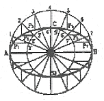
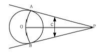

컴퓨터그래픽스운용기능사 (2013-10-12 기출문제)
1과목: 산업디자인 일반
1. 다음 중 실내 디자인의 계획 단계에서 고려할 조건으로 가장 거리가 먼 것은?
- 입지적 조건
- 건축적 조건
- 설비의 조건
- 색채의 조건
(정답률: 65%)

2. 조형의 대상으로서 빛에 대한 설명으로 틀린 것은?
- 반짝이는 빛은 역동적인 에너지가 느껴진다.
- 빛을 받는 표면과 그림자로 형태를 구별할 수 있다.
- 물질에 따라 빛의 굴절이 다름으로 해서 질감을 느낄수 있다.
- 부드러운 빛은 긴장감과 우울함이 느껴진다.
(정답률: 91%)
3. 제품을 디자인하는 과정 중에서 스타일이 결정된 단계에서 제품의 완성 예상도를 실물처럼 표현하는 것은?
- 렌더링
- 모델링
- 아이소메트릭 투영법
- 조감 투시도법
(정답률: 70%)
4. 다음 중 근대 디자인 역사에서 기계사용을 반대한 운동은?
- 미래파
- 독일공작연맹
- 바우하우스
- 미술공예운동
(정답률: 83%)
5. 디자인의 원리 중 대상의 부분과 부분, 부분과 전체 사이에 질서를 주는 것은?
- 통일
- 대칭
- 리듬
- 비례
(정답률: 53%)
6. 1960년대 중반에 이탈리아에서 시작되었으며 알키미아 스튜디오와 함께 팝아트적인 요소들을 다양한 양식들과 혼용하여 복합적인 형태를 추구하는 디자인 그룹은?(오류 신고가 접수된 문제입니다. 반드시 정답과 해설을 확인하시기 바랍니다.)
- 미니멀리즘
- 멤피스
- 아르누보
- 미래파
(정답률: 55%)
7. 기초디자인 능력을 기르기 위해 대상을 관찰하여 묘사할 때 중점을 두어야 할 사항으로 바르지 못한 것은?
- 관찰을 위한 수단으로서 미적 요소를 배운다는 자세로 임한다.
- 능숙한 기술력과 함께 기본적 감각을 익히는데 역점을 둔다.
- 사진의 기계적 획일성을 강조한 세밀한 묘사에 중점을 둔다.
- 자연성, 정밀성, 명료성 등을 재창조해야 한다.
(정답률: 56%)
8. 디자인의 궁극적 목적으로 가장 적합한 것은?
- 미의 창조를 통한 대중의 미적 욕구 충족
- 창의적 발상을 통한 아이디어의 전개
- 인간 생활의 물질적 풍요를 충족시키는 목적
- 하나의 그림, 모형 등을 전개시키는 계획 및 설계
(정답률: 69%)
9. 오즈번(Alex F. Osborn)에 의해 창학된 회의방식으로 디자인에서 널리 사용되고 있으며, 10명 이내의 멤버가 자유로운 발언을 통해 새로운 아이디어를 얻는 방식은?
- 상관분석법
- 시스템 분석법
- 브레인스토밍법
- 체크리스트법
(정답률: 94%)
10. 마케팅 믹스(marketing mix)의 구성 요소가 아닌 것은?
- 제품
- 영업
- 유통구조
- 판매촉진
(정답률: 57%)
11. 디자인에서 갖추어야 할 조건 중 가장 중요한 것은?
- 실용성과 아름다움
- 실용성과 상징성
- 순수성과 아름다움
- 개성과 상징성
(정답률: 77%)
12. 다음 중 점, 선, 면 등의 이념적 형태는?
- 순수형태
- 사실형태
- 자연형태
- 인공형태
(정답률: 80%)
13. 광고제작물의 구성요소 중에서 독자에게 주의를 환기시키고 본문으로 유도하기 위한 호소력이 담긴 간결하고 함축미가 있는 말은?
- 캡션
- 일러스트레이션
- 카피
- 헤드라인
(정답률: 84%)
14. 다음 중 게슈탈트의 시지각 원리가 아닌 것은?
- 유사성
- 근접성
- 개폐성
- 연속성
(정답률: 86%)
15. 스케치의 종류 중에서 '갈겨쓴다'의 의미로 아이디어 발상 과정에서 초기 단계에서 사용하며, 입체적인 표현은 생략하고 약화 형식으로 표현하는 스케치는?
- 러프 스케치
- 스타일 스케치
- 퍼스펙티브 스케치
- 스크래치 스케치
(정답률: 80%)
16. 다음 중 편집디자인에 분야에 속하지 않는 것은?
- 신문디자인
- 북디자인
- 브로슈어디자인
- 영상디자인
(정답률: 75%)
17. 다음 중 AIDMA 법칙의 구성요소가 아닌 것은?
- 주의
- 흥미
- 욕구
- 가격
(정답률: 80%)
18. 신제품 개발 과정 중 제품 개발에 대한 설명으로 옳은 것은?
- 완전한 제품원형을 만드는 데는 오랜 시간이 소요되지 않는다.
- 원형품의 개발 및 시험, 유표화(branding), 패키징 등의 세 단계를 거친다.
- 원형품의 설계할 때는 물리적 특성에 대한 소비자들의 반응을 후자에 놓고 추진한다.
- 완성된 제품은 기능 테스트와 소비자 테스트를 생략 한다.
(정답률: 83%)
19. 선에 대한 설명 중 틀린 것은?
- 선은 하나의 점이 이동하면서 이루는 자취이다.
- 선의 동적 특성에 영향을 끼치는 것은 점의 속도, 강약, 방향 등이다.
- 점이 일정한 방향으로 진행할 때 직선이 생긴다.
- 수직선은 평화, 정지를 나타낸다.
(정답률: 76%)
20. 다음 중 변화가 큰 대칭으로, 착시효과를 내는 데 가장 효과적인 방법은?
- 좌우대칭
- 방사대칭
- 비대칭
- 역대칭
(정답률: 45%)
2과목: 색채 및 도법
21. 다음 중 물체의 앞면 모서리는 수평선과 평행하게 하고, 옆면 모서리는 수평선과 임의의 각도 a로 하여 그린 투상도는?
- 등각투상도
- 부등각투상도
- 사투상도
- 축측투상도
(정답률: 58%)
22. 다음 중 인접색의 조화에 해당하는 것은?
- 빨강 - 녹색 - 주황
- 귤색 - 주황 - 남색
- 연두 - 녹색 - 다홍
- 빨강 - 자주 - 보라
(정답률: 82%)
23. 신인상파 화가의 점묘화는 무슨 혼합인가?
- 회전혼합
- 병치혼합
- 가산혼합
- 감산혼합
(정답률: 82%)
24. 나란히 배치된 색의 경계부분에 일어나는 대비효과를 약화시키기 위한 무채색의 테투리를 두르는 것과 관련이 있는 대비현상은?
- 계시대비
- 면적대비
- 연변대비
- 명도대비
(정답률: 56%)
25. 투시도를 작도할 때 소점을 나타내는 기호는?
- 8P
- PP
- VP
- HL
(정답률: 78%)
26. 색의 주목성에 대한 설명이 틀린 것은?
- 자극성이 강해 눈에 잘 띄는 색이다.
- 주의를 기울이지 않더라도 사람의 시선을 끄는 색이다.
- 인간의 심리작용에 의해서도 좌우된다.
- 한색계열의 저채도 색은 주목성이 높다.
(정답률: 86%)
27. 프리즘에 대한 스펙트럼의 발견은 빛의 어떤 성질을 이용한 것인가?
- 굴절현상
- 회절현상
- 간섭현상
- 파동현상
(정답률: 83%)
28. 정투상도법에서 제3각법을 기준으로 정면도, 평면도, 우측면도를 그릴 때의 설명이 틀린 것은?
- 각 도면의 위치를 측면도를 기준으로 한다.
- 우측면도는 정면도를 기준으로 우측에 있다.
- 정면도와 평면도는 가로의 크기가 동일하다.
- 정면도와 우측면도는 세로의 크기가 동일하다.
(정답률: 58%)
29. 비눗방울 표면에서 무지개색이 보이는 것은 빛의 어떤 성질과 관련이 있는가?
- 간섭
- 흡수
- 투과
- 굴절
(정답률: 40%)
30. 치수기입에 대한 설명이 틀린 것은?
- 치수는 실형이 나타나 있는 곳에 실제 길이를 기입 한다.
- 치수는 원칙적으로 치수보조선을 그어서 그림 밖에 기입한다.
- 치수는 정면도보다는 측면도에서 집중하여 기입한다.
- 치수는 외형선에 기입하고 은선에 기입하는 것은 피한다.
(정답률: 64%)
31. 색광혼합에 관한 설명 중 틀린 것은?
- 적(Red), 녹(Green), 청(Blue)이 3원색이다.
- 3원색을 모두 혼합하면 백광색이 된다.
- 색광혼합의 중간색이 색료혼합의 3원색이다.
- 혼합결과 명도가 낮아져 감법혼색이라고도 한다.
(정답률: 73%)
32. 어두운 곳에서 밝은 곳으로 갑자기 나오면 처음에는 눈이 부시지만 점차 주위의 밝기에 적응하게 되는 현상은?
- 간상순응
- 명순응
- 암순응
- 색순응
(정답률: 70%)
33. 평면도와 입면도에 의하여 투시도를 그리는 형식으로 하나의 소점이 깊이를 좌우하도록 작도하는 도법은?
- 평행 투시도법
- 유각 투시도법
- 조감 투시도법
- 사각 투시도법
(정답률: 51%)
34. 색채의 심리적 현상과 거리가 먼 것은?
- 온도
- 무게
- 감정
- 식별
(정답률: 75%)
35. 그림과 같은 타원 그리기 방법은?

- 두 원을 연접시킨 타원
- 두 원을 격리시킨 타원
- 4 중심법에 의한 타원
- 장축과 단축이 주어진 타원
(정답률: 56%)
36. 그림의 도형에서 구하고자 하는 것은?

- 주어진 반지름의 원 그리기
- 수직선을 2등분하기
- 원주 밖의 1점에서 원에 접선 긋기
- 원의 둘레 구하기
(정답률: 69%)
37. 비렌(Birren Faber)의 색채 공감각에서 식당 내부의 가구 등에 식욕이 왕성하도록 유도하기 위한 가장 좋은 색체는?
- 보라
- 주황
- 초록
- 파랑
(정답률: 85%)
38. 제도에서 ø40 의 설명으로 옳은 것은?
- 지름이 40mm 이다.
- 반지름이 40mm 이다.
- 길이가 40mm 이다.
- 두께가 40mm 이다.
(정답률: 79%)
39. 색조(tone)에 관한 설명으로 옳은 것은?
- 색상, 명도, 채도를 동시에 나타낸다.
- 색상, 명도를 동시에 나타낸다.
- 색상, 채도를 동시에 나타낸다.
- 명도, 채도를 동시에 나타낸다.
(정답률: 39%)
40. 다음 중 색채조화에 관한 연구와 관련이 없는 사람은?
- 그로피우스
- 스펜서
- 오스트발트
- 비렌
(정답률: 61%)
3과목: 디자인 재료
41. 빛의 양을 열려 있는 시간의 길이로 조절하는 장치는?
- 필름
- 셔터
- 렌즈
- 초점 조절장치
(정답률: 62%)
42. 찬 느낌을 주고 수분의 흡수와 발산이 빨라서 여름 의복에 적합한 실물성 섬유는?
- 황마
- 견
- 아마
- 케이폭
(정답률: 47%)
43. 다음 중 번지기 쉽기 때문에 정착액을 뿌려 색상을 고정 시켜야 하는 채색 재료는?
- 마커
- 파스텔
- 수채물감
- 색연필
(정답률: 79%)
44. 얇은 철판에 두께의 변화를 주지 않고 표면과 이면에 오목한 부분과 볼록한 부분이 반복되도록 금형을 사용하여 성형하는 기법은?
- 압인가공
- 소성가공
- 엠보싱가공
- 압출가공
(정답률: 75%)
45. 수지를 알코올류에 용해시켜 만든 도료는?
- 주정도료
- 래커
- 에나멜
- 유성도료
(정답률: 47%)
46. 다음 중 종이의 특성이 틀린 것은?
- 가로 방향은 강하고, 세로 방향은 약하다.
- 함수율은 적을 때에는 6%, 많을 때에는 10% 정도이다.
- 가볍고 얇으며, 여러 가지 방법으로 가공할 수 있다.
- 침엽수 펄프는 섬유가 길고 좁으며, 활엽수 펄프는 짧고 약하다.
(정답률: 60%)
47. 디자인 재료의 구비조건과 거리가 먼 것은?
- 품질이 균일한 것
- 염가로 구입할 수 있는 것
- 가공기술이 완전한 것
- 외관이 미려한 것
(정답률: 72%)
48. 다음 중 용해 펄프의 용도에 해당되지 않는 것은?
- 인조견사
- 스테이플 파이버(staple fiber)
- 종이
- 필름
(정답률: 42%)
4과목: 컴퓨터 그래픽스
49. 검정색과 흰색의 이미지로 구성되어 있으며 선택된 영역이 합성되지 않도록 막아주는 마스크 역할을 하는 것은?
- 레이어(Layer)
- 알파 채널(Alpha Channel)
- Z 버퍼(Z-buffer)
- 히스토그램(Histogram)
(정답률: 55%)
50. 오브젝트 벡터 방식으로 표현하는 그래픽 소프트웨어는?
- 일러스트레이터
- 포토샵
- 페인터
- 페인트샵프로
(정답률: 82%)
51. 유비쿼터스(Ubiquitous) 네트워킹과 관련이 가장 먼 것은?
- RFID
- 홈 네트워크
- 디지털 세탁기
- 아날로그 TV
(정답률: 74%)
52. 컴퓨터에서 신문광고용 그래픽 작업을 하여, 이를 인쇄용 4원색 분해 원고 출력을 하고자 할 경우 가장 적합한 선수(line per inch)는?
- 40 ~ 60선
- 80 ~ 133선
- 180 ~ 220선
- 200 ~ 300선
(정답률: 45%)
53. 다음 중 앨리어스(alias)와 안티 앨리어스(anti-alias)에 관한 설명으로 틀린 것은?
- 안티 앨리어스 처리 시 이미지의 크기는 변하지 않으면서 부드러운 이미지를 얻을 수 있다.
- 페이트 툴로 그린 선은 안티 앨리어스 된 선이다.
- 12 point 이하의 문자는 안티 앨리어스 시키면 문자 이미지가 더 선명하게 보인다.
- 안티 앨리어스는 물체 경계면의 픽셀을 주변 색상과 혼합한 중간 생삭을 넣어서 표현한다.
(정답률: 63%)
54. 영상을 제작하기 전에 내용을 쉽게 이해할 수 있도록 주요 장면을 그림으로 정리한 계획표는?
- 프레젠테이션(presentation)
- 스토리보드(story board)
- 트랜지션(transition)
- 도큐먼트(document)
(정답률: 83%)
55. 사운드 전용 포맷에 대한 설명 중 틀린 것은?
- AIFF : 오디오 교환파일 포맷
- WAV : 윈도우의 표준 사운드 파일
- AU : DOS 소프트웨어용의 일반적 포맷
- MID : 표준형식의 미디파일
(정답률: 65%)
56. 포토샵 프로그램이 효율적 작업을 위한 작업속도 향상방법 중 틀린 것은?
- 레이어(Layer)와 채널을 가능한 적게 사용하는 방식을 취한다.
- 내장 디스크 대신 외장 메모리에 프로그램을 넣어 처리 속도를 향상시킨다.
- 메뉴 명령대신 가급적 동등키(단축키)를 사용하여 곧바로 실행될 수 있도록 작업하여 효율을 높인다.
- 최초 작업은 저해상도 파일로 미리 해봄으로서 실제 출력 크기의 이미지 해상도 작업 시 제작상의 착오를 최소화한다.
(정답률: 52%)
57. 컴퓨터 내에서 산술논리장치와 제어장치로 구성되어 정보를 실행하는 것은?
- CPU
- Clock
- Memory
- BUS
(정답률: 76%)
58. 인터넷 상에서 이미지가 처음에는 대략적인 모양만을 나타내는 거친 프리뷰를 나타내고 그 다음에 단계적으로 자세하게 나타나도록 하기 위해 이미지를 저장할 때 선택하는 옵션은?
- 인터레이스 방식
- 안티 엘리어싱 방식
- 블러 방식
- 다운샘플링 방식
(정답률: 51%)
59. 투명한 셀로판 위에 그려진 그림을 겹쳐서 움직이는 전통적 애니메이션 기법은?
- 셀(Cell) 애니메이션
- 인형 애니메이션
- 디지털 애니메이션
- 투광 애니메이션
(정답률: 85%)
60. 컴퓨터의 저장 포맷 중 분판출력을 목적으로 하며, 전자출판의 가장 대표적인 파일 포맷은?
- JPEG
- EPS
- WMF
- PSD
(정답률: 58%)